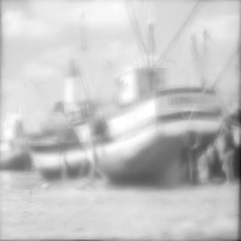
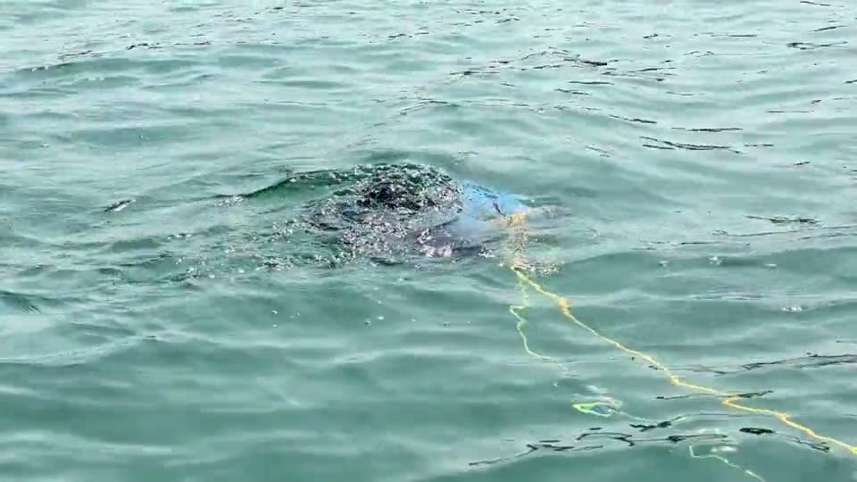

Imaging through turbulence
A physics-based simulator for cameras looking across a kilometer of air near the ground, where every part of the scene blurs differently.
Research area
Random fluctuations in temperature, and underwater in salinity, bend light as it travels. The result is blurred, warped images and fading optical links. We simulate optical turbulence, measure it in air and in Lake Superior, and work on seeing and communicating through it.
Projects

A physics-based simulator for cameras looking across a kilometer of air near the ground, where every part of the scene blurs differently.

Measuring turbulence strength in Lake Superior with an LED array, a fiducial tag and an underwater robot, toward longer-range optical links underwater.
Gallery
For wave-optics simulation, see WavePy, our open-source Python package.